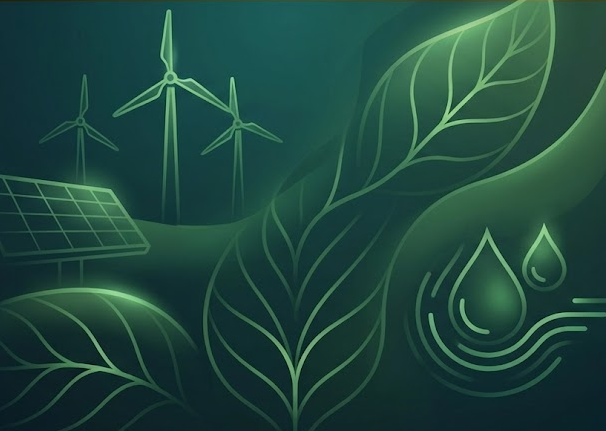

PT | EN

Na FerroTech, acreditamos que a precisão industrial e a sustentabilidade devem caminhar juntas. Desenvolvemos processos de baixo impacto, otimização energética e reuso inteligente de materiais.
CO2 neutralizado anualmente em nossas operações de corte.
De reaproveitamento de água nos sistemas de resfriamento CNC.
Das sobras de aço e metal são destinadas à reciclagem certificada.

Nossa planta industrial é 60% alimentada por matriz solar própria, reduzindo a dependência de fontes fósseis.

Implementamos ciclos fechados com fornecedores para garantir que embalagens e resíduos retornem ao ciclo produtivo.
Implementação de filtros de alta performance em toda linha de soldagem.
Alcançar 85% de autonomia energética através de fontes renováveis.
Certificação Internacional de Empresa Zero Carbono (Net Zero).